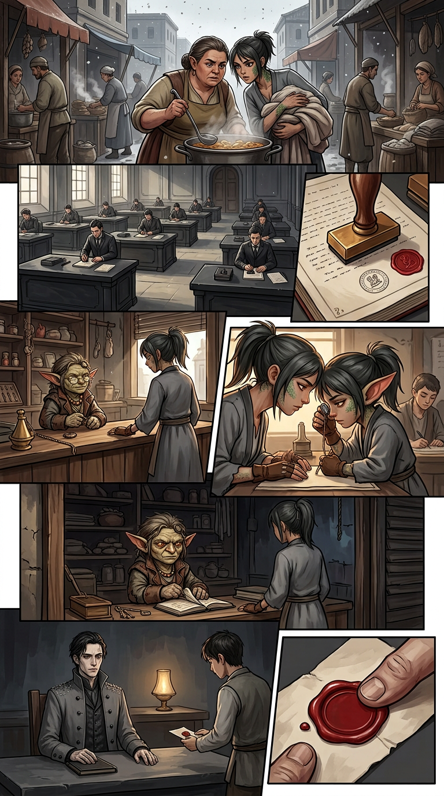

सुत्रजात (THREADBORN) — अध्याय ०२ — पृष्ठ ००१
अध्याय शीर्षक: वह मिनट जो ऋणी है आर्क: I — अनुकुलन खण्ड: अग्निखण्ड — भस्म-गर्त की सुबह → ऊपरी कगार, लेखा-कार्यालय पृष्ठ प्रकार: अध्याय-प्रारम्भ / अफ़वाह — ७ पैनल, अन्त में एक मुहर
English source:
page-001.mdLettering follows the same balloon styles — seeseries-bible/style-guide.md.
अध्याय ००१ से उठाये गये धागे: मौन क्षण (०८), इकसठवीं गाँठ (००९), माँ-ऋण (००७), रेखक की झूठी लेखा-परीक्षा "इससे अधिक कुछ नहीं" (००९), और सुर्ख मोम (००३–००९)। अध्याय २ उस नगर में खुलता है जो एक क्षण को याद रखता है जिसे वह कभी स्वीकारेगा नहीं — और एक समय से पहले चुकाए गए ऋण में, दो स्त्रियों के बीच जो गले नहीं मिलतीं।
पैनल १ — मध्यम वाइड, हाँड़ी की अफ़वाह (~१४%)
कैमरा: गर्त में सड़क के स्तर पर, सुबह। दो ठेलों के बीच एक खाने की हाँड़ी से उठती भाप। दृश्य: गुठली (चौड़ी, हाथ में अभी भी कछुल) और पीरा (दुबली, बाहों में किसी और का धुलाई-बोझ) भाप के ऊपर सिर जोड़े। चारों ओर बाज़ार एक स्वर ज्यादा चुप्पी से काम करता है। राख हमेशा की तरह गिरती है। कोई कल शब्द नहीं कहता।
कैप्शन: गर्त एक स्मृति लेकर जागा जिसे उसने किस्सा कह लेना तय कर लिया था।
गुठली (धीमी): तकुआ झिलमिलाया था।
पीरा (और धीमी): तकुए झिलमिलाते नहीं।
गुठली: तो मैं झिलमिलाई। हम चार सौ एक साथ झिलमिलाए, और मेरे चिह्न मेरे भीतर मौन हो गए, और मैंने सूत्र-यन्त्र को रुकते महसूस किया।
पीरा (पहले से चलती हुई): तकुए। झिलमिलाते। नहीं।
पैनल २ — वाइड, भय कागज़ी काम जैसा (~१३%)
कैमरा: लेखा-कार्यालय की काले पत्थर की मेज़ों की पंक्तियों में, सुबह की रोशनी कठोर और स्वच्छ। दृश्य: हर लिपिक बीती रात के अभिलेखों पर दोबार मुहर लगा रहा है। दूसरी मुहर उसी पृष्ठ पर पहली से आधी उँगली सरक कर पड़ती है — दो मुहरों वाला पृष्ठ वह है जिसे कोई बाद में कहे कि कभी मुहर लगी ही नहीं। कहीं राख नहीं। कहीं बात नहीं।
कैप्शन: ऊपर कगार पर भय न दौड़ता है, न चिल्लाता है।
कैप्शन: वह दाखिला करता है।
पैनल ३ — मध्यम, गाँठ और कील, सुबह (~१३%)
कैमरा: ठेले के द्वार से, अध्याय ०१ के पृष्ठ ००७ पैनल २ जैसा फ्रेम — पर इस बार दिन की रोशनी, शटर चढ़े, और इरा बिना भेजे हुए भीतर आती हुई। दृश्य: केसा ठेले के पीछे गिनती-डोर लिए। इरा ठेले पर कुछ नहीं रखती: न सिक्के, न सुइयाँ, न मुड़ा पत्र। वह अपने दोनों हाथ सपाट रखती है, और बैठ जाती है।
इरा: एक सच्ची बात। समय से पहले।
केसा (हाथ रुकते): ऋण कीमी नहीं हुआ, बे।
इरा: कीमत से पहले इसका मोल मैं जानती हूँ।
पैनल ४ — कसा दो-पात्र शॉट, चार स्वर (~१५%)
कैमरा: दिन की रोशनी में ठेले के पार माथे करीब, लालटेन बुझी — अध्याय ०१ के पृष्ठ ००७ पैनल ४ की तुक, आग बुझी हुई। दृश्य: इरा की नज़रें अपने ही हाथों पर, जब वह ज़ोर से याद करती है। केसा का लूप ऊपर रहता है: यह परख नहीं, ग्रहण है। उसका अँगूठा गिनती-डोर को एक बार मलता है — जिस तरह क्षुद्र बिना लिखे लिखते हैं।
इरा: वह सीते समय गुनगुनाती थी। बेसुरी। हमेशा वही चार स्वर।
इरा: मैं समझती थी काम का गीत है। सुई की लय थामने की चीज़।
इरा (और छोटी): उसने कभी शब्द नहीं गाए। केवल चार।
पैनल ५ — मध्यम, ठेला बन्द (~१३%)
कैमरा: केसा के हाथों पर, क्रम से तीन काम: गिनती-डोर समेटना, ठेले की बही बन्द करना, और शटर की डण्डी थामना। दृश्य: इरा देखती हुई, एक भौं चढ़ी — जीवन में उसने इस ठेले को दोपहर से पहले अँधेरा नहीं देखा।
केसा (चार स्वरों को वहाँ रखते जहाँ स्याही नहीं पहुँचती): चार स्वर। बेसुरे। कभी शब्द नहीं।
केसा: ठेला आज बन्द है।
इरा: अभी तो सुबह है।
केसा (शटर उतरते): तो बन्द की लम्बी दिन होगी।
कैप्शन: चार अनुकुलनों में गाँठ और कील कभी मौसम, ऋण या मृत्यु के लिए नहीं बन्द हुआ था।
पैनल ६ — मध्यम, पर्ची आती है (~१३%)
कैमरा: ऊपर कगार पर रेखक की अपनी मेज़: नंगा पत्थर का पाटा, दिन की रोशनी में एक अनचाही लालटेन, उसकी बही-पटिया इस बार बन्द। लेख — आगन्तुक-रेलिंग का युवा लिपिक — एक अकेली पर्ची पत्थर पर रखता है और पहले ही पीछे हट रहा है, क्योंकि लिपिक जानते हैं कि किस कागज़ के इर्द-गिर्द मौसम होता है। दृश्य: रेखक की सांकल बहती है। कॉलर ऊँचा ही रहता है। पत्थर पर पर्ची वह मुहर लिए है जो पुराने लहू के रंग जैसी है।
लेख (द्वार से, पहले ही जा चुका): केवल लेखाधिकारी के हाथ के लिए।
ध्वनि: टक् (पर्ची रखी जाती है)
पैनल ७ — हुक — धूसर मोम, सुर्ख मोम (~१९%)
कैमरा: रेखक के अँगूठे के नीचे पर्ची पर सूक्ष्म, किनारे थामे, बिना तोड़े। उसके पार बेफोकस: स्वच्छ कगारों की खिड़की। दृश्य: दिन की रोशनी में सुर्ख मुहर: न कोई चिह्न, न अक्षर, केवल एक रंग जो अभिलेख के किसी खण्ड का नहीं। रेखक का अँगूठा नहीं चलता। दूसरे हाथ में सांकल रुकी नहीं है — और किसी तरह यही बदतर है।
रेखक (खाली कमरे से, अन्त तक विधि-भव): एक लेखा-परीक्षा… लेखा-परीक्षा की।
रेखक (और धीमे): उसने मेरा इससे अधिक कुछ नहीं पढ़ लिया।
कैप्शन: परिषद् की मोम धूसर है।
कैप्शन (अन्तिम बॉक्स, नीचे): यह पर्ची परिषद् ने मुहरबन्द नहीं की।
निरन्तरता टिप्पणियाँ
- अफ़वाह मौन क्षण का सार्वजनिक चेहरा है। घंटे, गुंजन या झिलमिलाहट को कोई इरा के नाम के साथ एक ही साँस में नहीं लेता। गर्त की किस्सा लोक-भाषा में रहती है ("हम चार सौ झिलमिलाए"), जबकि पाठक जानता है गिनती एक क्षण थी। दोनों रजिस्टर सदा अलग रखें; जिस दिन वे मिलें, वह रहस्योद्घाटन है।
- एक पृष्ठ पर दो मुहरें = परिषद् का भय-व्याकरण। पुनर्मुहरित अभिलेख मुकरने योग्य है। "यह कभी हुआ ही नहीं" के लिए अब से दोहरी मुहर को ऊपरी कगार की दृश्य-भाषा बनाएँ।
- माँ-ऋण की किस्त समय से पहले चुकी और बिना स्याही प्राप्त की गई। केसा का अँगूठा-मलना क्षुद्र लेखन है; कहीं कुछ नहीं लिखा जाता। चार स्वर अब संसार में ठीक एक जगह रखे हैं: एक गोबलिन की स्मृति। वह अग्निखण्ड की सबसे सुरक्षित और सबसे चुराई जा सकने वाली तिजोरी, दोनों है।
- चार स्वर बोया ताल हैं, चुकाई नहीं। बेसुरे, चार, कभी शब्द नहीं। अध्याय ३ से पहले उन्हें किसी सुनाई देने वाली चीज़ से मेल न खाने दें; जब अन्त में मेल खाएँ, पहले गलत ढंग से मेल खाएँ।
- केसा का ठेला बन्द करना उसकी चेतावनी-घंटी है। उसने संसार में एक सीवन सुनी है (बिना-खींचा सूत्र, सीलन, पेटी में नमूना) और अब एक धुन जिसे वह पहचानती है बिना यह कहे सके कि कहाँ से। वह सोचने के लिए ठेला बन्द करती है। उसे सोचते मत दिखाएँ; शटर दिखाएँ।
- लेख यहाँ नामित होता है (पृष्ठ ००५ पर आरक्षित): आगन्तुक-रेलिंग का लिपिक। युवा, विधि-भव, और ऊपरी कगार का वह अकेला चेहरा जिस पर गर्त बाद में भरोसा करेगा। हर दृश्य में बैठा-या-जाता हुआ रखें; लिपिक किसी के लिए नहीं खड़े होते, किसी बाद के आर्क में एक बार छोड़कर।
- सुर्ख मोम का व्याकरण, अब कठोर नियम: परिषद् की मोम धूसर है; सुर्ख अभिलेख के किसी खण्ड की नहीं। भविष्य की हर सुर्ख मुहर मुवक्किल का कागज़ी काम है, और मुवक्किल कभी प्रकट नहीं होता — केवल पर्चियाँ, तलबें, पुनःपरीक्षाएँ। खरीदार झूठों को वही पढ़ता है जो वे हैं: ताले।
- अध्याय २ के लिए सांकल-बजट: एक रुकावट। पृष्ठ ०० से पहले न खर्च करें, और सच से छोटी चीज़ पर खर्च करें।
- सीने वाला बन्द, मुवक्किल अदृश्य, गाँठ-आकृति बिना मालिक, तकुआ मौन।
इस पृष्ठ से कार्ड-खेल के सूत्र
| वस्तु | भविष्य का कार्ड |
|---|---|
| पुनर्मुहरण (दो मुहरें, एक पृष्ठ) | परिषद् जादू — "Re-Stamp: इस अभिलेख का अन्तिम प्रभाव कभी हुआ ही नहीं; स्मृतियाँ असहमत" |
| हाँड़ी की अफ़वाह (गुठली और पीरा) | स्थान — "Steam-Pot: एक अफ़वाह बिखेरो; हर अफ़वाह खण्डन करने में १ ऋण" |
| चार स्वर, बेसुरे | क्वेस्ट/लोर कार्ड — Mother's Four Notes: ऐसी कुंजी जो अभी किसी ताले में नहीं बैठती |
| समय-पूर्व किस्त | अनुबन्ध कार्ड — "Pay Early: सत्य-ऋण समय से पहले चुकाओ; ऋण दयालुता याद रखता है" |
| सुर्ख तलब-पर्ची | क्वेस्ट-शृंखला — पुनःपरीक्षा आर्क; मुवक्किल केवल कागज़ से काम करता है |
| धूसर बनाम सुर्ख मोम | TCG की सभी मुहर-कार्डों के लिए गुट-चिह्न नियम |